|
|
| arthropods text index | photo index |
| Phylum Arthropoda | Class Merostomata | Order Xiphosura > Family Limulidae | about moulting |
| Horseshoe
crabs Family Limulidae updated Nov 2019
Where seen? Horseshoe crabs are sometimes encountered on our shores, more often on our northern shores especially near mangroves. What is a horseshoe crab? The horseshoe crab is a strange, ancient creature that has been around since before the dinosaurs. It is not a crab or even a crustacean. It is more closely related to spiders and scorpions of the Class Arachnida. There are only four species of living horseshoes crabs in the world. Limulus polyphemus is found on the Atlantic coast. In Southeast Asia there are three: the Mangrove horseshoe crab (Carcinoscorpius rotundicauda) which is also the smallest horseshoe, and the Coastal horseshoe crab (Tachypleus gigas) and in Japan, China and southern Sabah are found the Chinese horseshoe (Tachypleus tridentatus). Features: Adult body 15-25cm in diameter. Its shape is ideal for bulldozing through the mud and sand, and clinging to the bottom in rough water. It probably got its common name because its shell resembles a horse's hoof. A horseshoe has an exoskeleton, but unlike a crab's, this does not incorporate calcium and is made of chitin and protein instead. The shell is hard in adults, but more flexible in juveniles. Like other arthropods, a horseshoe crab must moult to grow bigger. During their first year, they may moult 5-6 times, growing 20-25% with each moult. It takes about 7 years to reach maximum size. Sometimes, you might come across what appears to be dead horseshoe crabs on the shore. These might just be moults. Moults are lightweight, have transparent eyes and no bad smell. More about moulting. Sometimes confused with stingrays. In murky waters, these two different animals do have a similar profile, both being round and flat with a long tail. Stingrays are fishes that are related to sharks. What does it eat? A harmless creature, the horseshoe crab bulldozes quietly along on the sea bottom feeding on worms, clams and anything edible including dead animals. They may also scrape off algae. Eating with its legs! The horseshoe crab has no jaws. It has to grind down its food with the rough spiny areas (called gnathobases) near the base of the walking legs. The first pair of legs are tiny with small pincers which pick up and pass titbits into its four pairs of 'food processing' legs. Walking movements grinds up the food and the bits flow into the mouth, which is between the second pair of legs and conveniently faces backwards. So a horseshoe crab can only eat while it walks! In fact, the Class it belongs to is called Merostomata, which means 'thigh mouth'. Galloping Horses? Horseshoes generally creep slowly over the sea bottom. However, they can move more speedily if they have to. They can use their last pair of legs, called pushers, to lurch forwards. These legs are longer, have spines which flare out when pushed against the sand. These legs are also toothed, and thought to direct water flow over the gills and to clean the gills. Horseshoe crabs can also swim for short distances, using their swimmerettes and gill flaps. They can also 'hop' over the sand slowly by bending their hinged body then pushing forwards against the tail, which is anchored in the sand. Super gills: Horseshoes breathe well in oxygen-poor water. They have five pairs of flap-like appendages which contain book gills. Horseshoe crab blood contains copper compounds which carry oxygen, the way iron does in our blood. So horseshoe crab blood is blue when exposed to air! But the horseshoe crab is NOT the only blue-blooded arthropod. Some true crabs and other arthropods also have blue blood. Eyes Everywhere: A horseshoe crab has a lot of eyes! It has a pair of compound eyes at the top of the shell. Unlike an insect, these can't form an image and are used mainly to find mates. It also has five simple eyes on the top of the shell, a series of light sensors on the top and side of their tails, and a pair on the underside near the mouth! The eyes of a horseshoe crab are more sensitive at night, when they are active and seek out mates, and less so during the day. In a Tailspin: The sharp tail of the horseshoe crab is is connected to the body in a ball-and-socket joint so it is very mobile. The tail is not venomous and is not used as a weapon. It is merely used as a lever to right itself if it is overturned. If you see an upside down horseshoe crab struggling with its tail waving around, do give it a helping hand. It will not hurt you. The tail (called a telson or caudal spike) is also used as a rudder when moving underwater. If a horseshoe loses its tail, it is doomed. So please be gentle with its tail and don't dangle a horseshoe crab by its tail. |
 Often seen in a pair, the smaller male on top and behind the larger female. Pulau Sarimbun, May 05 |
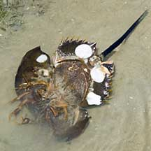 Using its tail to flip over to the right side. Note the white slipper snailsstuck on the underside. Chek Jawa, Aug 07 |
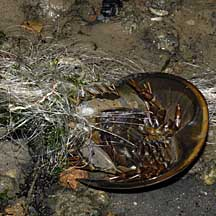 Often entangled in abandoned drift nets. Changi, Oct 07 |
| Horsing around: Horseshoes mate during high spring tides when they can reach the highest part of the beach. The males are smaller and usually hitch a ride on the females using their specially adapted hooked first legs. Sometimes several males latch onto each other forming a chain on a female. The female digs a pit near the high water mark and lays about 200-300 eggs. The males release sperm over the eggs and the nest is covered. They may come back again at the next high tide and a female may lay a total of 2,000-30,000 eggs. In the US, migrating birds time their arrival to feed on this bonanza of horseshoe crab eggs. Eggs hatch at the next full moon when the tide is at its highest again. The hatchlings (called trilobite larvae) look like miniature adults but without tails, and are bright green! The larvae burrow into the sand and after a few moults begins to develop tails. |
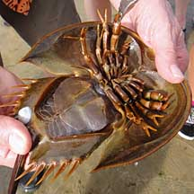 Males have modified front legs to hold on to the female. 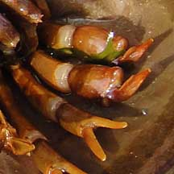 Chek Jawa, Mar 11 |
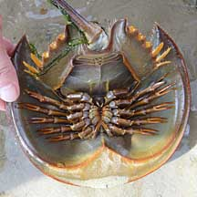 Females don't have modified front legs. 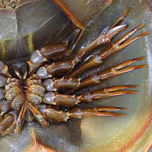 Chek Jawa, Mar 11 |
 Juvenile horseshoe crab. Kranji, Jun 08 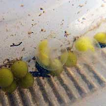 Horseshoe crab eggs seen in sand. Mandai, Apr 11 |
| Role in the habitat: Like other
scavengers, horseshoe crabs help keep the place clear of dead animals.
Although the adults have few natural predators (apparently, only sharks
and turtles will eat adults), their eggs and hatchlings are eaten
by many creatures. Various creatures may settle on a horseshoe crab
including slipper
snails, barnacles, keelworms and other
encrusting plants and animals. Why are there so many 'dead' horseshoe crabs? You might come across what appears to be dead horseshoe crabs strewn on the shore. These are often not dead horseshoe crabs but merely their discarded skins! Like other arthropods, they a hard exoskeleton (external skeleton) and need to shed their exoskeleton in order to grow bigger. Called moulting, this also allows the animal to regenerate lost limbs. More about moulting. Human uses: Horseshoe crab blood has a substance that is so sensitive to bacteria that purified extracts of the blood are used to test for the presence of bacteria in human medication (e.g., intravenous fluids) and in medical tests. For more on how this test was discovered and exactly how it works, see the Horseshoe Crab website. About 200,000 crabs are bled every year for this substance. About 20% of a horseshoe's blood is extracted and in the US, laws require that the animal be returned to the sea. But about 10% die in the process. A team from the National University of Singapore's Department of Zoology has cloned a substance to replace wild-extracted horseshoe blood. Links to more info below. Horseshoe crabs have also contributed in other ways to human health. Much of the basic principles of vision is based on studies of the horseshoe crab's eyes. Status and threats: The Coastal horseshoe crab (Tachypleus gigas) is listed as 'Endangered' and the Mangrove horseshoe crab (Carcinoscorpius rotundicauda) as 'Vulnerable' on the Red List of threatened animals of Singapore. Populations of these ancient creatures in Singapore have been severely reduced over the last two decades due to habitat loss. Humans are the main threat to horseshoes. Habitat loss, pollution and overharvesting have seriously depleted horseshoe populations. In the 1950's, they were harvested in the US and ground up as fertiliser and livestock feed. This only stopped when their numbers plunged drastically. Harvesting began again in the 1980's, this time they were used as fish bait in commercial eel traps; only the eggs (ripped out of females) are used. Nothing, not even eels, like to eat horseshoe flesh. Overharvesting of horseshoes also seriously affect birds migrating along the US Atlantic coastline, as they depend on the egg bonanza to fuel them on their long trip. Horseshoe crab populations are vulnerable to overharvesting because they reproduce slowly. Few hatchlings make it through the natural predator net, they reach sexual maturity only at 9-12 years and are rarely found far from where they were born. There are so many of them only because they live for a long time, some up to 20-30 years. |
| Horseshoe crabs on Singapore shores |
|
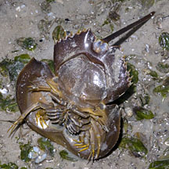 |
 |
|
Mangrove
horseshoe crab
(Carcinoscorpius rotundicauda) |
Coastal
horseshoe crab
(Tachypleus gigas) |
|
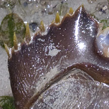 |
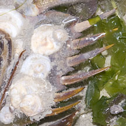 |
|
Spines
on the side of the body shorter.
|
Spines
on the side of the body longer.
|
|
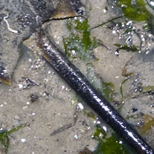 |
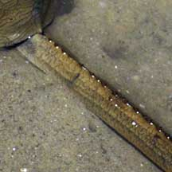 |
|
Tail
near the body is circular in cross-section,
smooth on the upperside. |
Tail
near the body is triangular in cross-section
with serrated edge on the upperside. |
|
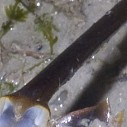 |
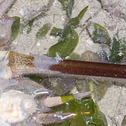 |
|
Tail
without a groove on the underside.
|
Tail
with a groove on the underside near the body.
|
|
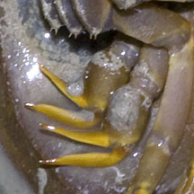 |
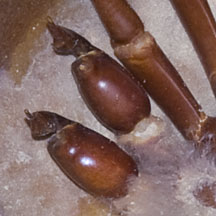 |
|
Male's
special legs for holding onto the female
has two 'fingers'. |
Male's
special legs for holding onto the female
has one 'finger'. |
These distinguishing features from taxo4254
| Horseshoe
crabs recorded for Singapore in red are those listed among the threatened animals of Singapore from Ng, P. K. L. & Y. C. Wee, 1994. The Singapore Red Data Book: Threatened Plants and Animals of Singapore.
|
| Links About horseshoe crabs in general
About the Singapore breakthrough in cloning Factor C More about Singapore's horseshoe crabs
About other horseshoe crab species not found in Singapore
References
|